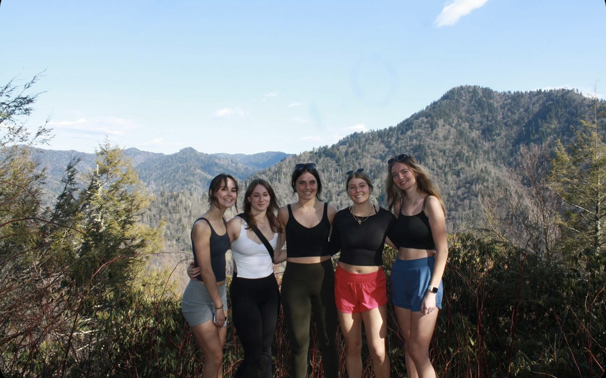

Casey Higgins Travel Bucket List

Casey Higgins
October 13th, 2024
An overview of a few of the places I have visited, and places I dream of visiting in the future. As a previous competitive dancer, most of the traveling I have done has been in relation to dance events and competitions. Going forward, however, I would love to be able to travel to new places to simply explore and take it all in. Although my favorite vacations typically involve relaxing on the beach, there are other types of locations I would love to see, and though the list may not be entirely realistic, it is still fun to create.
Favorite Places Visited
- Munich, Germany
- Klagenfurt, Austria
- Vienna, Austria
- Venice, Italy
- Las Vegas, Nevada
- Cape May, New Jersey
- Bonita Springs, Florida
- Gatlinburg, Tennessee
- Boston, Massachusetts
- Chicago, Illinois
Beach Bucket List Items
- Bora Bora, French Polynesia
- Fiji, Oceania
- Bahamas, Caribbean
- Maldives, South Asia
- Crete, Greece
- Siesta Key, Florida
- Malibu, California
- Turks and Caicos
- Cinque Terre, Italy
- Mykanos, Greece
City Bucket List Items
- Barcelona, Spain
- Miami, Florida
- Rome, Italy
- Amsterdam, The Netherlands
- Sydney, Australia
- Athens, Greece
- Dubai
- Tokyo, Japan
- New Orleans, Louisiana
- Seattle, Washington
- Portland, Maine
Rural Bucket List Items
- Penobscot Bay, Maine
- Steamboat Springs, Colorado
- Baños, Ecuador
- Cork, Ireland
- Astoria, Oregon
Travel Apps to Download for your Next Trip

Casey Higgins
October 13th, 2024
Hostelworld
Hostelworld is an application centered around helping travelers to find affordable locations to stay in during their trips as well as connect with others who will be staying there. The app also allows users to create group chats with new/potential friends, find events and activities nearby, and discover new experiences by viewing other user profiles.
PackPoint Travel Packing List
To avoid forgetting crucial items on a trip, travelers should check out PackPoint Travel Packing List. The application prompts the user to enter metrics of their trip such as duration, weather, activities planned, destination, etc., and then utilizes this data to create the perfect packing list.
GasBuddy: Find & Pay for Gas
GasBuddy helps travelers going by car to save on gas purchases. It allows for users to report gas station prices and locations, so that others on the app can see where to get the best deal when filling up.
Viator Tours & Attractions
Viator allows for users to browse thousands of tours, activities, and experiences globally. They are then able to book directly through the app, or add them to a wishlist to save for later. The app even includes a map function which directs travelers to the correct destination for their tour.
| Application |
Number of Users |
Year Created |
| Hostelworld |
11 million |
1999 |
| PackPoint |
2 million |
2019 |
| GasBuddy |
60 million |
2000 |
| Viator |
455 million |
1995 |